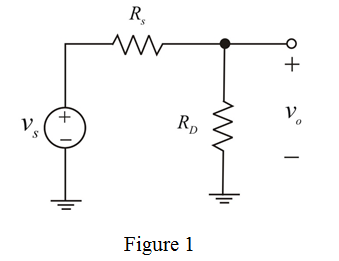

The dynamic resistance of the diode is,

By using the voltage division rule,
…... (1)
Substitute  for
for  in equation.
in equation.
Therefore the output voltage is .
For small signal model are short circuited, dc current source is replaced by open circuit and diode is replaced with rd.
The modified circuit is shown in Figure 1.

The dynamic resistance of the diode is,
By using the voltage division rule,
…... (1)
Substitute for in equation.
Therefore the output voltage is .
Find the value of for
for :
:
Substitute 1 mA for I , 25 mV for  and
and  in .
in .
Thus, the output voltage is .
Find the value of for
for :
:
Substitute 0.1 mA for I , 25 mV for  and
and  in
in  .
.
Therefore, the output voltage is  .
.
Find the value of for
for :
:
Substitute 1  A for I , 25 mV for
A for I , 25 mV for  and in
and in  .
.
Therefore, the output voltage is
Find the dc current :
:
Substitute 25 mV for  and and for
and and for  in expression of
in expression of  .
.
Therefore the resultant current is .